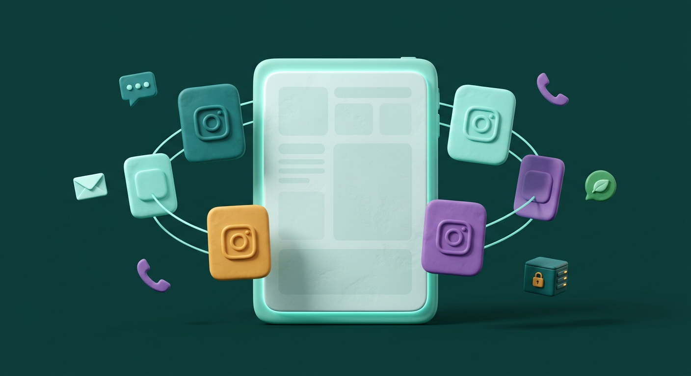

چند پیج، یک فضای کاری
پیجهای متصل را از یک پنل بررسی کنید؛ وضعیت، پیامها، کامنتها و قانونهای هر پیج را جدا و مرتب ببینید.
اعلانبان، CRM پیاممحور خودمیزبان برای همهی گفتگوهای مشتری؛ با ابزارهای ویژهی اینستاگرام برای مدیریت چند پیج، دایرکت، کامنت، ریپلای استوری، دریافت شماره و پاسخگویی هوشمند.

اعلانبان یک پنل CRM پیاممحور است که روی سرور خود شرکت نصب میشود. نقطهی قوت برجستهی آن، ابزارهای یکپارچهی اینستاگرام است: چند پیج را در یک فضای کاری مدیریت کنید، دایرکتها و کامنتها را ببینید، برای کامنت و ریپلای استوری قانون بسازید، شمارهی مشتری را دریافت و به پروفایلش وصل کنید و با دانش اختصاصی پیج از AI کمک بگیرید. در کنار این ابزارها، پیامرسانها، پیامک، ایمیل خروجی، تماس گویا و گفتگوی سایت نیز در همان پنل مدیریت میشوند.
برای پیجهای متعدد، بدون پراکندگی ابزارها؛ با قانونهای روشن، ثبت سابقه و امکان تحویل گفتگو به تیم.
پیجهای متصل را از یک پنل بررسی کنید؛ وضعیت، پیامها، کامنتها و قانونهای هر پیج را جدا و مرتب ببینید.
برای کلمهی کلیدی، پست مشخص یا همهی پستها قانون بسازید؛ پاسخ عمومی اختیاری و پیام خصوصی را طبق سناریوی خود تنظیم کنید.
برای ریپلای استوریهای مشخص یا همهی استوریها مسیر پاسخ و پیگیری تعریف کنید.
شمارهی موبایل نوشتهشده در دایرکت میتواند شناسایی و در پروفایل ثبت شود؛ اگر این شماره قبلاً در کانال دیگری وجود داشته باشد، پروفایلها ادغام میشوند.
در صورت فعالبودن، پیش از ارسال محتوای اصلی وضعیت فالو بررسی میشود؛ پس از کلیک کاربر هم امکان بررسی مجدد وجود دارد.
پرسشهای متداول، دستورالعمل هر پیج و دانش ثبتشده برای پست به پاسخگویی کمک میکنند؛ در ساعات کاری، پیشنویس AI با تأیید اپراتور ارسال میشود.
تیم گفتگوها را در صندوق ورودی میبیند، پاسخ میدهد و هر جا لازم باشد پاسخ نهایی را انسانی نگه میدارد.
۱ تا ۱۰ کارت تصویری با توضیح کوتاه و دکمهی لینک را برای یک مخاطب مشخص ارسال کنید.
مشتری زیر پست، کلمهای مثل «قیمت» یا «راهنما» مینویسد.
اعلانبان شرط قانون را میسنجد و در صورت تطبیق، پاسخ عمومی اختیاری میدهد.
محتوا، لینک یا اطلاعات تعیینشده از مسیر پاسخ خصوصی کامنت فرستاده میشود.
رویداد و پیام در سابقه ثبت میشوند تا تیم گفتگو را در صندوق ورودی دنبال کند.
بهجای گمشدن میان اعلانهای چند پیج و پاسخهای تکراری، برای هر پیج مسیر مشخصی بسازید: کامنت را ببینید، پاسخ مناسب را بفرستید، شماره را به پروفایل وصل کنید و ادامهی گفتگو را از یک صندوق ورودی پیگیری کنید.
قابلیت اتصال به API رسمی اینستاگرام با استفاده از YarAPI؛ نام ابزار اتصال در اینفوگرافیک بهعنوان روش اتصال نمایش داده میشود، نه بهعنوان نام محصول اصلی.
کلید دارای دسترسیهای لازم؛ وبهوک + polling پشتیبان.
دایرکت، کامنت، ریپلای استوری و رویدادهای پیج.
چند پیج، قانون جدا، صندوق ورودی مشترک، پروفایل مشتری و گزارشها.
پیجهای موردنظر را در YarAPI متصل کنید و با کلید دارای دسترسیهای لازم در اعلانبان همگامسازی کنید. دریافت رویدادها با وبهوک و polling پشتیبان انجام میشود؛ در سرور بدون HTTPS میتوان از polling زمانبندیشده استفاده کرد.
account:read
messages:read
messages:send
webhooks:manage
content:publish برای انتشار
روش اتصال مستقل برای یک حساب Business یا Creator؛ مناسب کسبوکاری که میخواهد یک حساب را مستقیم به پنل متصل کند.
تنظیمات و قانونهای مخصوص هر پیج، جدا و مرتب.
سه جریان گفتگو با یک سابقهی واحد برای هر مخاطب.
قانونهای قابلکنترل برای پاسخهای تکراری.
اتصال شماره به پروفایل یکپارچه در کانالهای دیگر.
وضعیت، هشدارها، وبهوکها و خطاها در یک نگاه.
قانونها را بر اساس کمپین و محتوای هر پیج تنظیم کنید؛ برای کسی که فقط کامنت گذاشته، پیام اولیه از مسیر رسمی پاسخ خصوصی به کامنت ارسال میشود، نه دایرکت عادی.
برای هر پیج میتوان درخواست اجباری شماره را روشن یا خاموش کرد و متن درخواست و تشکر را تنظیم کرد.
اگر مشتری شمارهی موبایل ایران را در متن دایرکت بنویسد و پروفایلش هنوز شماره نداشته باشد، شماره شناسایی و به پروفایل افزوده میشود؛ ارقام فارسی، عربی و انگلیسی و جداکنندههای متداول پشتیبانی میشوند.
اگر شماره در کانال دیگری ثبت شده باشد، هویتها به پروفایل موجود پیوند میخورند و اعلان پنلی نمایش داده میشود.
برای هر پست توضیح دانشی ثبت کنید؛ پاسخ AI به کامنت در صورت نبود قانون منطبق و وجود دانش پست قابلاستفاده است.
از ۱ تا ۱۰ کارت تصویری با عنوان، توضیح کوتاه و حداکثر ۳ دکمهی لینک برای هر کارت بسازید و برای مخاطب مشخص بفرستید.
در صورت داشتن شناسهی رسانه، عکس یا ویدیوی استوریای که کاربر به آن پاسخ داده دریافت میشود.
سلامت اتصال، scopeها، وبهوک، polling، آخرین همگامسازی و لاگ درخواستها برای پیگیری خطاها در دسترس است.
content:publish نیاز دارد.پیجهای متصل را در یک پنل پیگیری کنید؛ قانون کامنت و استوری، دریافت شماره، تنظیم AI و سابقهی گفتگو در فضای کاری هر پیج قرار میگیرد.
پیامهای ربات در صندوق ورودی ثبت میشوند و اپراتور یا اتوماسیون از همان پنل پاسخ میدهد. پیام تکراری وبهوک دوباره پردازش نمیشود.
برای ارسال به شماره، حتی اگر مخاطب ربات را شروع نکرده باشد. صفیر مسیر رسمی دریافت پاسخ ندارد؛ پاسخها باید از کانال دیگری برسند.
پاسخهای خط اختصاصی و وضعیت تحویل با کار پسزمینهی cron خوانده میشوند و در تاریخچه ثبت میشوند.
ارسال ایمیل از پنل پشتیبانی میشود؛ دریافت ایمیل ورودی در راهنما پشتیبانیشده نیست.
با تنظیم سرویس ملیپیامک فعال میشود. تماس متنی بهتر است اعرابگذاری شود؛ تماس فایل صوتی تابع محدودیت ساعت و تعداد شمارهی سرویس است.
ویجت روی سایت نصب میشود و گفتگو را به صندوق ورودی میفرستد. ظاهر ویجت از استایل سایت جداست و میتوان دامنههای مجاز را محدود کرد.
مشتری واقعی؛ نام، شماره، وضعیت، یادداشت، گروه و برچسب به این پروفایل تعلق دارد.
راه ارتباط با شخص در یک کانال؛ مانند حساب تلگرام، دایرکت یک پیج، نشست چت سایت یا شمارهی پیامک.
شماره موبایل برای پیدا کردن پروفایل همسان و ادغام خودکار هویتها به کار میرود.
دو حالت نمایش برای تیمهای مختلف: کار بر اساس کانال، یا یک فهرست یکجا به ترتیب آخرین پیام.
جستجو با نام یا شماره، فیلتر خواندهنشده و بلاکشده، پیشنمایش آخرین پیام و صفحهبندی.
پیامهای همهی هویتهای همان شخص به ترتیب زمان؛ پیامهای خودکار با برچسب منبع و پیام ناموفق با هشدار مشخص میشوند.
اطلاعات تماس، هویتها، آمار پیام، گروهها، برچسبها و پاسخهای فرم در کنار گفتگو.
هر کانال در تب جدا؛ در تب اینستاگرام میتوان گفتگوها را با چیپ هر پیج فیلتر کرد.
همهی گفتگوها به ترتیب آخرین پیام، همراه با برچسب کانال و پیج.
مشخصات، یادداشت، هویتهای شبکهها، گروهها، برچسبها و سابقهی رفتاری در یک جا.
مخاطب دارای شماره عضو است؛ مخاطبی که هنوز شماره ندارد ناشناس باقی میماند.
گروه برای دستهبندی اصلی، ارسال هدفمند و محدودکردن دسترسی اپراتور؛ برچسب برای دستهبندیهای آزاد و چندگانه.
جستجو، کانال، گروه، برچسب، داشتن شماره، نرخ پاسخ، آخرین فعالیت و وضعیت آخرین ارسال.
افزودن دستی یا ورود CSV و Excel؛ خروجی CSV با فیلترهای فعلی و سازگار با Excel فارسی.
پیامها، پاسخ فرمها، کلیک لینکهای رهگیری و کمپینهای دریافتشده در یک خط زمانی.
| مشتری | کانال | گروه | وضعیت | آخرین فعالیت |
|---|---|---|---|---|
| مریم رضایی | دایرکت اینستاگرام | مشتری ویژه | عضو | امروز |
| سعید ک. | تلگرام | سرنخ | عضو | دیروز |
| بازدیدکنندهی سایت | چت آنلاین | — | ناشناس | ۳ روز پیش |
| نگار م. | بله | مشتری | عضو | ۵ روز پیش |
| حسین ط. | پیامک | کمپین پاییز | عضو | هفتهی گذشته |
گرههای پیام و دکمه برای رفتن به گره دیگر، بازکردن لینک یا درخواست شماره؛ قواعد شرطی و شبیهساز تست هم دارد.
پرسیدن چند سؤال، ذخیره پاسخ در پروفایل و امکان پیام پایان؛ روی کانالهای پیامرسان و اینستاگرام قابلاستفاده است.
قانون بر اساس کانال، پیج اینستاگرام، کلمهی محرک و تطبیق دقیق، شامل، شروع با یا Regex؛ اولویت تعیین میکند کدام قانون زودتر بررسی شود.
قانونهای پیج یا قانون مشترک برای کامنت و ریپلای استوری، با پاسخ عمومی اختیاری، فالو اجباری و دایرکت خصوصی.
مرحلهی بعدی پس از تأخیر تعیینشده فقط برای کسانی ارسال میشود که پس از مرحلهی قبل پاسخی ندادهاند.
زمانبندی ارسال پیامرسان، پیامک و صفیر، تماس گویا یا ایمیل؛ اجرای کارهای پسزمینه به cron نیاز دارد.
اولویت تعیین میکند کدام قانون زودتر بررسی شود؛ قانون مخصوص هر پیج بر قانون عمومی مقدم است و در نبود قانون منطبق، امکان استفاده از دانش پست برای AI وجود دارد.
در ساعات کاری، AI بهطور پیشفرض پاسخ پیشنهادی را در کادر مینویسد و ارسال نهایی با اپراتور است.
پاسخ خودکار فقط در حالتهای تنظیمشده، مانند بیرون ساعت کاری یا گفتگوی ارجاعشده به AI، فعال میشود.
مدخلهای عنوان، کلیدواژه و محتوا؛ واردسازی از TXT، MD یا CSV؛ مدخلهای علامتخوردهی «همیشه» در هر پاسخ استفاده میشوند.
AI میتواند از پیامهای اخیر، اطلاعات مشتری، پاسخ فرمها و مدخلهای مرتبط دانش استفاده کند.
دستورالعمل و امضای جدا برای هر پیج، FAQ مشترک و دانش هر پست برای پاسخ به کامنت در دسترس است.
ابزار اینستاگرام میتواند تصویر را توصیف کند یا فایل صوتی را به متن تبدیل کند.
پروایدرها بر اساس اولویت امتحان میشوند و در صورت خطای اتصال یا پاسخ، سیستم میتواند سراغ پروایدر بعدی برود.
دایرکت، ربات پیامرسان، پیامک یا چت سایت وارد مسیر ارتباط میشوند.
هویت کانال در گفتگوی مشتری ثبت میشود و پیامهای همان شخص به پروفایل او وصل میشوند.
شماره میتواند از فرم، دکمهی اشتراک شماره یا متن دایرکت شناسایی شود؛ شمارهی تکراری باعث ادغام پروفایل میشود.
قانون، منو، فرم، AI یا اپراتور انسانی بر اساس تنظیمات و ترتیب پردازش پاسخ میدهند.
گروهها و برچسبها، فیلترها و پاسخ فرم به شناخت و انتخاب مخاطب کمک میکنند.
پیام هدفمند، کمپین یا لینک شخصی ارسال میشود و تعامل و کلیکها در گزارشها ثبت میشوند.
مخاطبان را با گروه، برچسب و وضعیت عضو یا ناشناس انتخاب کنید و اولویت کانال را برای هر شخص تعیین کنید.
شمارهها را وارد کنید، از CSV یا Excel بخوانید یا اعضای گروه و برچسب را انتخاب کنید؛ شمارهی نامعتبر و تکراری حذف میشود.
اول صفیر و سپس پیامک برای کسانی که بله ندارند، فقط صفیر، فقط پیامک یا هر دو همزمان.
توکنهای نام، نام کوچک، موبایل و لینک رهگیری شخصی در متن پیام قابلاستفادهاند.
هر گیرنده ردیف جدا دارد؛ صف با cron حتی پس از بستهشدن مرورگر ادامه مییابد و از ارسال دوباره جلوگیری میشود.
وضعیت هر گیرنده، خطا، کانال استفادهشده و نتیجهی ارسال برای بررسی و گزارش ثبت میشود.
با یک خط کد نصب میشود؛ عنوان، خوشآمد، ساعت کاری، فرم نام و موبایل، رنگ و جای حباب قابلتنظیم است. Shadow DOM کمک میکند استایل سایت و ویجت روی هم اثر نگذارند.
پاپآپ، نوار بالا یا پایین و کارت اسلاید-این با پیشنمایش زنده، زمان نمایش، شرط آدرس و بازهی تاریخ قابلتنظیم است. فرم میتواند پس از ثبت شماره پیام تشکر یا کد تخفیف ثابت یا یکتا نشان دهد.
شمارههای ثبتشده در صفحهی سرنخها قابل فیلتر و خروجی CSV هستند؛ در صورت وجود همان شماره در بانک مشتری، سرنخ به پروفایل وصل میشود.
لینک کوتاه و شخصی برای هر گیرنده؛ گزارش کلیک یکتا، دستگاه، مرورگر، سیستمعامل و مرجع. پیشواکشی پیامرسانها از کلیک واقعی جدا میشود.
روند بازدید صفحه و نشست، بازدیدکنندهی تازه و برگشتی در بازههای زمانی.
افراد حاضر روی سایت، صفحات پربازدید و بازدیدکنندگان آنلاین.
صفحات برتر، صفحات ورود و خروج، منابع ترافیک و کمپینهای UTM.
دستگاه، مرورگر، سیستمعامل، جغرافیا و بازدیدکنندگان شناساییشدهی متصل به پروفایل.
هیتمپ کلیک و حرکت ماوس، نقاط مشکلدار و مسیر کامل بازدیدکننده در نشست.
تعریف مرحلهها با بخشهایی از URL و مشاهدهی ریزش هر مرحله.
روند کلیک لینکهای رهگیری، لینکهای پُرکلیک و تعامل با مشتریان.
حالت بدون کوکی با شناسهی روزانهی چرخشی در تنظیمات موجود است.
هدفهای روزانه، هفتگی، ماهانه یا کمپینی با KPI، مسئول، مهلت و نوار پیشرفت.
تسکهای کاربر و برد کانبان با جابهجایی کارتها بین ستونها.
تقویم ماهانهی شمسی؛ برنامهریزی محتوا برای پیج یا کانال، مسئول، زمان انتشار، سناریو، مرحلههای تولید و عوامل تولید.
بودجهی دورهای و کانالی در کنار هزینهی واقعی محتوا و گزارش جمعبندی.
اعضای تیم، دپارتمان، نقش، شرح وظایف و چارت سازمانی درختی قابلویرایش.
چند پیج، دایرکت، کامنت، ریپلای استوری، تنظیمات اختصاصی و سلامت اتصال را از یک فضای کاری پیگیری کنید.
گفتگوهای همهی کانالها در نمای تبدار یا فهرست یکجا، با پروفایل مشتری کنار هر مکالمه.
مشخصات و هویتهای کانالی، یادداشتها، گروهها، برچسبها، فرمها و کلیکهای لینک رهگیری در یک نمای واحد.
مدیریت پروایدرها، دستورالعمل پاسخگو، منابع دانش و حالت پیشنهاد یا پاسخ خودکار.
ساخت منو، فرم، پاسخ خودکار و کمپین چندمرحلهای با قوانین قابلتنظیم.
| گیرنده | کانال | وضعیت |
|---|---|---|
| مریم رضایی | صفیر بله | تحویل شد |
| سعید ک. | پیامک | تحویل شد |
| نگار م. | در صف | در انتظار |
| حسین ط. | شماره نامعتبر | ناموفق — دلیل ثبت شد |
| زهرا ب. | تماس گویا | در حال ارسال |
پیشرفت ارسالهای انبوه، وضعیت هر گیرنده و جزئیات خطا در یک صفحه.
تنظیم ویجت گفتگو، اعلان پاپآپ و فرم ثبت شماره با پیشنمایش.
گزارش رفتار بازدیدکننده، مسیر صفحات، قیف تبدیل و تعامل لینکهای رهگیری.
تقویم شمسی محتوا در کنار اهداف، وظایف، بودجه و اعضای تیم.
اتصال پیجهای مجاز، مدیریت متمرکز دایرکت و رویدادهای پیج، و دسترسی به ابزارهای اینستاگرام بر اساس scopeهای فعال.
اتصال مستقیم برای یک حساب Business یا Creator.
ربات، وبهوک، پاسخگویی، منو و اتوماسیون.
ارسال به شماره موبایل؛ دریافت پاسخ از مسیر صفیر در دسترس نیست.
کاوهنگار، sms.ir و ملیپیامک؛ دریافت خط اختصاصی و وضعیت تحویل.
SMTP برای ایمیل خروجی؛ تماس گویا از مسیر ملیپیامک.
GapGPT، ابرآروان AI، OpenRouter، OpenAI، سرویس سازگار با OpenAI یا Ollama محلی.
گفتگوی آنلاین، اعلان سایت، ردیاب آنالیتیکس و لینکهای رهگیری.
دسترسی کامل به کانالها، تنظیمات، لاگها، اینستاگرام و هوش مصنوعی.
دسترسی فقط به صفحهها و گروههای مشتری تعیینشده؛ داشبورد و پروفایل خودش همیشه در دسترس است.
پایگاه داده روی سرور نصبشدهی شرکت قرار میگیرد؛ در صورت فعالکردن سرویسهای بیرونی، درخواستهای لازم به همان سرویسها فرستاده میشوند. برای نمونه، پروایدر AI یا پلتفرم پیامرسان ممکن است بخشی از محتوای لازم برای انجام کار را دریافت کند.
curl، json، mbstring و pdo_mysqlzip برای ورود Excel و soap برای تماس گویاگفتگوها را یکجا ببینید، برای رویدادهای تکراری قانون بسازید و هر پیج را با تنظیمات خودش مدیریت کنید.
پیامهای مشتری در یک پنل جمع میشوند و تیم بین اپلیکیشنها جابهجا نمیشود.
شماره موبایل میتواند هویتهای پراکنده را به پروفایل مشترک وصل کند.
نصب مستقل روی سرور شرکت و کنترل تنظیمات استقرار.
پاسخ خودکار، فرم، منو، اتوماسیون کامنت، کمپین و زمانبندی در یک پنل.
رابط فارسی و راستچین، نمایش تاریخ شمسی و تقویم محتوا.
سطح دسترسی اپراتورها، گروههای مشتری و ظاهر قابلسفارشیسازی پنل.
گزارش ارسال، لینک رهگیری، آنالیتیکس سایت، هیتمپ و قیف تبدیل.